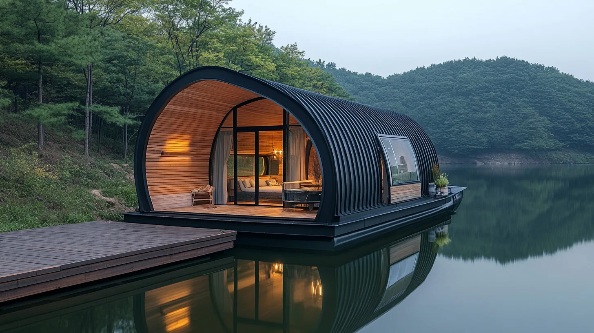
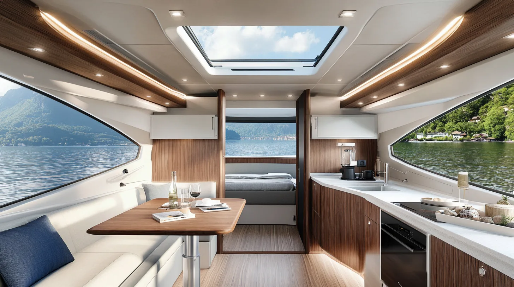
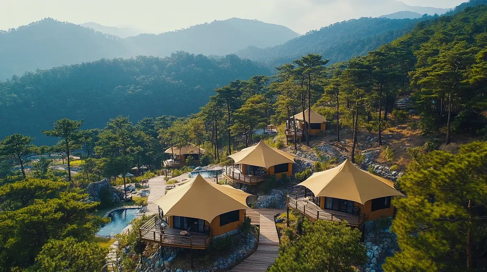

Signature-P 파노라마 파빌리온 글램핑는 360도 파노라마 뷰를 제공하는 개방형 프리미엄 파빌리온입니다. 알루미늄 합금 프레임으로 탁 트인 시야를 확보합니다.
WOCS는 중간상인을 배제하고 경쟁력 있는 가격을 제공합니다. 초기 상담부터 최종 설치까지 1:1 맞춤 서비스.
해변 글램핑은 바다를 즐기면서 편안하게 지낼 수 있는 공간입니다.
글램핑 내부를 완성하는 맞춤형 가구 패키지를 선택하세요